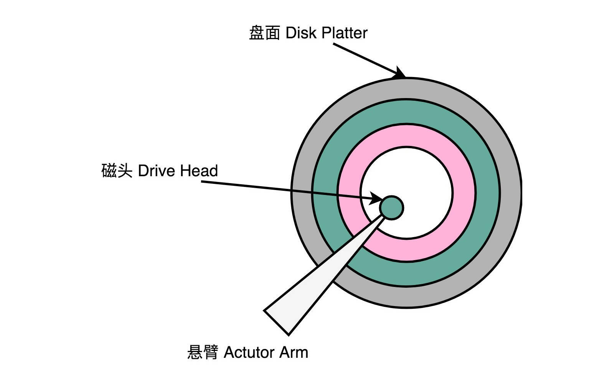
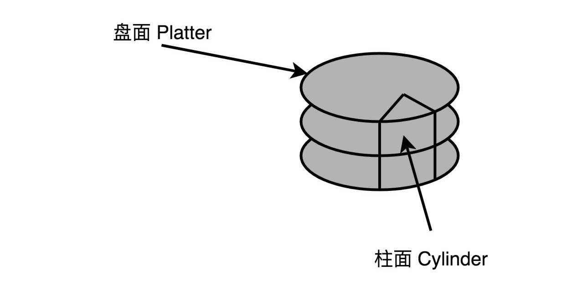

- 00 开篇词 为什么你需要学习计算机组成原理？.md.html
- 01 冯·诺依曼体系结构：计算机组成的金字塔.md.html
- 02 给你一张知识地图，计算机组成原理应该这么学.md.html
- 03 通过你的CPU主频，我们来谈谈“性能”究竟是什么？.md.html
- 04 穿越功耗墙，我们该从哪些方面提升“性能”？.md.html
- 05 计算机指令：让我们试试用纸带编程.md.html
- 06 指令跳转：原来if...else就是goto.md.html
- 07 函数调用：为什么会发生stack overflow？.md.html
- 08 ELF和静态链接：为什么程序无法同时在Linux和Windows下运行？.md.html
- 09 程序装载：“640K内存”真的不够用么？.md.html
- 10 动态链接：程序内部的“共享单车”.md.html
- 11 二进制编码：“手持两把锟斤拷，口中疾呼烫烫烫”？.md.html
- 12 理解电路：从电报机到门电路，我们如何做到“千里传信”？.md.html
- 13 加法器：如何像搭乐高一样搭电路（上）？.md.html
- 14 乘法器：如何像搭乐高一样搭电路（下）？.md.html
- 15 浮点数和定点数（上）：怎么用有限的Bit表示尽可能多的信息？.md.html
- 16 浮点数和定点数（下）：深入理解浮点数到底有什么用？.md.html
- 17 建立数据通路（上）：指令加运算=CPU.md.html
- 18 建立数据通路（中）：指令加运算=CPU.md.html
- 19 建立数据通路（下）：指令加运算=CPU.md.html
- 20 面向流水线的指令设计（上）：一心多用的现代CPU.md.html
- 21 面向流水线的指令设计（下）：奔腾4是怎么失败的？.md.html
- 22 冒险和预测（一）：hazard是“危”也是“机”.md.html
- 23 冒险和预测（二）：流水线里的接力赛.md.html
- 24 冒险和预测（三）：CPU里的“线程池”.md.html
- 25 冒险和预测（四）：今天下雨了，明天还会下雨么？.md.html
- 26 Superscalar和VLIW：如何让CPU的吞吐率超过1？.md.html
- 27 SIMD：如何加速矩阵乘法？.md.html
- 28 异常和中断：程序出错了怎么办？.md.html
- 29 CISC和RISC：为什么手机芯片都是ARM？.md.html
- 30 GPU（上）：为什么玩游戏需要使用GPU？.md.html
- 31 GPU（下）：为什么深度学习需要使用GPU？.md.html
- 32 FPGA、ASIC和TPU（上）：计算机体系结构的黄金时代.md.html
- 33 解读TPU：设计和拆解一块ASIC芯片.md.html
- 34 理解虚拟机：你在云上拿到的计算机是什么样的？.md.html
- 35 存储器层次结构全景：数据存储的大金字塔长什么样？.md.html
- 36 局部性原理：数据库性能跟不上，加个缓存就好了？.md.html
- 37 理解CPU Cache（上）：“4毫秒”究竟值多少钱？.md.html
- 38 高速缓存（下）：你确定你的数据更新了么？.md.html
- 39 MESI协议：如何让多核CPU的高速缓存保持一致？.md.html
- 40 理解内存（上）：虚拟内存和内存保护是什么？.md.html
- 41 理解内存（下）：解析TLB和内存保护.md.html
- 42 总线：计算机内部的高速公路.md.html
- 43 输入输出设备：我们并不是只能用灯泡显示“0”和“1”.md.html
- 44 理解IO_WAIT：IO性能到底是怎么回事儿？.md.html
- 45 机械硬盘：Google早期用过的“黑科技”.md.html
- 46 SSD硬盘（上）：如何完成性能优化的KPI？.md.html
- 47 SSD硬盘（下）：如何完成性能优化的KPI？.md.html
- 48 DMA：为什么Kafka这么快？.md.html
- 49 数据完整性（上）：硬件坏了怎么办？.md.html
- 50 数据完整性（下）：如何还原犯罪现场？.md.html
- 51 分布式计算：如果所有人的大脑都联网会怎样？.md.html
- 52 设计大型DMP系统（上）：MongoDB并不是什么灵丹妙药.md.html
- 53 设计大型DMP系统（下）：SSD拯救了所有的DBA.md.html
- 54 理解Disruptor（上）：带你体会CPU高速缓存的风驰电掣.md.html
- 55 理解Disruptor（下）：不需要换挡和踩刹车的CPU，有多快？.md.html
- 结束语 知也无涯，愿你也享受发现的乐趣.md.html
- 捐赠
45 机械硬盘：Google早期用过的“黑科技”
在 1991 年，我刚接触计算机的时候，很多计算机还没有硬盘。整个操作系统都安装在 5 寸或者 3.5 寸的软盘里。不过，很快大部分计算机都开始用上了直接安装在主板上的机械硬盘。到了今天，更早的软盘早已经被淘汰了。在个人电脑和服务器里，更晚出现的光盘也已经很少用了。
机械硬盘的生命力仍然非常顽强。无论是作为个人电脑的数据盘，还是在数据中心里面用作海量数据的存储，机械硬盘仍然在被大量使用。不仅如此，随着成本的不断下降，机械硬盘还替代掉了很多传统的存储设备，比如，以前常常用来备份冷数据的磁带。
那这一讲里，我们就从机械硬盘的物理构造开始，从原理到应用剖析一下，看看我们可以怎么样用好机械硬盘。
拆解机械硬盘
上一讲里，我们提到过机械硬盘的 IOPS。我们说，机械硬盘的 IOPS，大概只能做到每秒 100 次左右。那么，这个 100 次究竟是怎么来的呢？
我们把机械硬盘拆开来看一看，看看它的物理构造是怎么样的，你就自然知道为什么它的 IOPS 是 100 左右了。
我们之前看过整个硬盘的构造，里面有接口，有对应的控制电路版，以及实际的 I/O 设备（也就是我们的机械硬盘）。这里，我们就拆开机械硬盘部分来看一看。

一块机械硬盘是由盘面、磁头和悬臂三个部件组成的。下面我们一一来看每一个部件。
首先，自然是盘面（Disk Platter）。盘面其实就是我们实际存储数据的盘片。如果你剪开过软盘的外壳，或者看过光盘 DVD，那你看到盘面应该很熟悉。盘面其实和它们长得差不多。
盘面本身通常是用的铝、玻璃或者陶瓷这样的材质做成的光滑盘片。然后，盘面上有一层磁性的涂层。我们的数据就存储在这个磁性的涂层上。盘面中间有一个受电机控制的转轴。这个转轴会控制我们的盘面去旋转。
我们平时买硬盘的时候经常会听到一个指标，叫作这个硬盘的转速。我们的硬盘有 5400 转的、7200 转的，乃至 10000 转的。这个多少多少转，指的就是盘面中间电机控制的转轴的旋转速度，英文单位叫RPM，也就是每分钟的旋转圈数（Rotations Per Minute）。所谓 7200 转，其实更准确地说是 7200RPM，指的就是一旦电脑开机供电之后，我们的硬盘就可以一直做到每分钟转上 7200 圈。如果折算到每一秒钟，就是 120 圈。
说完了盘面，我们来看磁头（Drive Head）。我们的数据并不能直接从盘面传输到总线上，而是通过磁头，从盘面上读取到，然后再通过电路信号传输给控制电路、接口，再到总线上的。
通常，我们的一个盘面上会有两个磁头，分别在盘面的正反面。盘面在正反两面都有对应的磁性涂层来存储数据，而且一块硬盘也不是只有一个盘面，而是上下堆叠了很多个盘面，各个盘面之间是平行的。每个盘面的正反两面都有对应的磁头。
最后我们来看悬臂（Actutor Arm）。悬臂链接在磁头上，并且在一定范围内会去把磁头定位到盘面的某个特定的磁道（Track）上。这个磁道是怎么来呢？想要了解这个问题，我们要先看一看我们的数据是怎么存放在盘面上的。
一个盘面通常是圆形的，由很多个同心圆组成，就好像是一个个大小不一样的“甜甜圈”嵌套在一起。每一个“甜甜圈”都是一个磁道。每个磁道都有自己的一个编号。悬臂其实只是控制，到底是读最里面那个“甜甜圈”的数据，还是最外面“甜甜圈”的数据。
知道了我们硬盘的物理构成，现在我们就可以看一看，这样的物理结构，到底是怎么来读取数据的。
我们刚才说的一个磁道，会分成一个一个扇区（Sector）。上下平行的一个一个盘面的相同扇区呢，我们叫作一个柱面（Cylinder）。
读取数据，其实就是两个步骤。一个步骤，就是把盘面旋转到某一个位置。在这个位置上，我们的悬臂可以定位到整个盘面的某一个子区间。这个子区间的形状有点儿像一块披萨饼，我们一般把这个区间叫作几何扇区（Geometrical Sector），意思是，在“几何位置上”，所有这些扇区都可以被悬臂访问到。另一个步骤，就是把我们的悬臂移动到特定磁道的特定扇区，也就在这个“几何扇区”里面，找到我们实际的扇区。找到之后，我们的磁头会落下，就可以读取到正对着扇区的数据。

所以，我们进行一次硬盘上的随机访问，需要的时间由两个部分组成。
第一个部分，叫作平均延时（Average Latency）。这个时间，其实就是把我们的盘面旋转，把几何扇区对准悬臂位置的时间。这个时间很容易计算，它其实就和我们机械硬盘的转速相关。随机情况下，平均找到一个几何扇区，我们需要旋转半圈盘面。上面 7200 转的硬盘，那么一秒里面，就可以旋转 240 个半圈。那么，这个平均延时就是
1s / 240 = 4.17ms
第二个部分，叫作平均寻道时间（Average Seek Time），也就是在盘面选转之后，我们的悬臂定位到扇区的的时间。我们现在用的 HDD 硬盘的平均寻道时间一般在 4-10ms。
这样，我们就能够算出来，如果随机在整个硬盘上找一个数据，需要 8-14 ms。我们的硬盘是机械结构的，只有一个电机转轴，也只有一个悬臂，所以我们没有办法并行地去定位或者读取数据。那一块 7200 转的硬盘，我们一秒钟随机的 IO 访问次数，也就是
1s / 8 ms = 125 IOPS 或者 1s / 14ms = 70 IOPS
现在，你明白我们上一讲所说的，HDD 硬盘的 IOPS 每秒 100 次左右是怎么来的吧？好了，现在你再思考一个问题。如果我们不是去进行随机的数据访问，而是进行顺序的数据读写，我们应该怎么最大化读取效率呢？
我们可以选择把顺序存放的数据，尽可能地存放在同一个柱面上。这样，我们只需要旋转一次盘面，进行一次寻道，就可以去写入或者读取，同一个垂直空间上的多个盘面的数据。如果一个柱面上的数据不够，我们也不要去动悬臂，而是通过电机转动盘面，这样就可以顺序读完一个磁道上的所有数据。所以，其实对于 HDD 硬盘的顺序数据读写，吞吐率还是很不错的，可以达到 200MB/s 左右。
Partial Stroking：根据场景提升性能
只有 100 的 IOPS，其实很难满足现在互联网海量高并发的请求。所以，今天的数据库，都会把数据存储在 SSD 硬盘上。不过，如果我们把时钟倒播 20 年，那个时候，我们可没有现在这么便宜的 SSD 硬盘。数据库里面的数据，只能存放在 HDD 硬盘上。
今天，即便是数据中心用的 HDD 硬盘，一般也是 7200 转的，因为如果要更快的随机访问速度，我们会选择用 SSD 硬盘。但是在当时，SSD 硬盘价格非常昂贵，还没有能够商业化。硬盘厂商们在不断地研发转得更快的硬盘。在数据中心里，往往我们会用上 10000 转，乃至 15000 转的硬盘。甚至直到 2010 年，SSD 硬盘已经开始逐步进入市场了，西数还在尝试研发 20000 转的硬盘。转速更高、寻道时间更短的机械硬盘，才能满足实际的数据库需求。
不过，10000 转，乃至 15000 转的硬盘也更昂贵。如果你想要节约成本，提高性价比，那就得想点别的办法。你应该听说过，Google 早年用家用 PC 乃至二手的硬件，通过软件层面的设计来解决可靠性和性能的问题。那么，我们是不是也有什么办法，能提高机械硬盘的 IOPS 呢？
还真的有。这个方法，就叫作Partial Stroking或者Short Stroking。我没有看到过有中文资料给这个方法命名。在这里，我就暂时把它翻译成“缩短行程”技术。
其实这个方法的思路很容易理解，我一说你就明白了。既然我们访问一次数据的时间，是“平均延时 + 寻道时间”，那么只要能缩短这两个之一，不就可以提升 IOPS 了吗？
一般情况下，硬盘的寻道时间都比平均延时要长。那么我们自然就可以想一下，有什么办法可以缩短平均的寻道时间。最极端的办法就是我们不需要寻道，也就是说，我们把所有数据都放在一个磁道上。比如，我们始终把磁头放在最外道的磁道上。这样，我们的寻道时间就基本为 0，访问时间就只有平均延时了。那样，我们的 IOPS，就变成了
1s / 4ms = 250 IOPS
不过呢，只用一个磁道，我们能存的数据就比较有限了。这个时候，可能我们还不如把这些数据直接都放到内存里面呢。所以，实践当中，我们可以只用 1⁄2 或者 1⁄4 的磁道，也就是最外面 1⁄4 或者 1⁄2 的磁道。这样，我们硬盘可以使用的容量可能变成了 1⁄2 或者 1/4。但是呢，我们的寻道时间，也变成了 1⁄4 或者 1/2，因为悬臂需要移动的“行程”也变成了原来的 1⁄2 或者 1/4，我们的 IOPS 就能够大幅度提升了。
比如说，我们一块 7200 转的硬盘，正常情况下，平均延时是 4.17ms，而寻道时间是 9ms。那么，它原本的 IOPS 就是
1s / (4.17ms + 9ms) = 75.9 IOPS
如果我们只用其中 1⁄4 的磁道，那么，它的 IOPS 就变成了
1s / (4.17ms + 9ms/4) = 155.8 IOPS
你看这个结果，IOPS 提升了一倍，和一块 15000 转的硬盘的性能差不多了。不过，这个情况下，我们的硬盘能用的空间也只有原来的 1⁄4 了。不过，要知道在当时，同样容量的 15000 转的硬盘的价格可不止是 7200 转硬盘的 4 倍啊。所以，这样通过软件去格式化硬盘，只保留部分磁道让系统可用的情况，可以大大提升硬件的性价比。
在 2000-2010 年这 10 年间，正是这些奇思妙想，让海量数据下的互联网蓬勃发展起来的。在没有 SSD 的硬盘的时候，聪明的工程师们从硬件到软件，设计了各种有意思的方案解决了我们遇到的各类性能问题。而对于计算机底层知识的深入了解，也是能够找到这些解决办法的核心因素。
总结延伸
好了，相信通过这一讲，你对传统的 HDD 硬盘应该有了深入的了解。我们来总结一下。
机械硬盘的硬件，主要由盘面、磁头和悬臂三部分组成。我们的数据在盘面上的位置，可以通过磁道、扇区和柱面来定位。实际的一次对于硬盘的访问，需要把盘面旋转到某一个“几何扇区”，对准悬臂的位置。然后，悬臂通过寻道，把磁头放到我们实际要读取的扇区上。
受制于机械硬盘的结构，我们对于随机数据的访问速度，就要包含旋转盘面的平均延时和移动悬臂的寻道时间。通过这两个时间，我们能计算出机械硬盘的 IOPS。
7200 转机械硬盘的 IOPS，只能做到 100 左右。在互联网时代的早期，我们也没有 SSD 硬盘可以用，所以工程师们就想出了 Partial Stroking 这个浪费存储空间，但是可以缩短寻道时间来提升硬盘的 IOPS 的解决方案。这个解决方案，也是一个典型的、在深入理解了硬件原理之后的软件优化方案。
推荐阅读
想要对机械硬盘的各种性能指标有更深入的理解，你可以读一读 Symantec 写的 Getting The Hang Of IOPS 的白皮书，以及后面的深入阅读内容，对你应该会很有帮助。我把对应的链接放在这里，你可以看一看。
© 2019 - 2023 Liangliang Lee. Powered by gin and hexo-theme-book.